2. Getting started with Quartus
1. Creating a New project
In this section, we will learn how to create a new project using the Quartus software. As part
of this, we will create multiple files for our designs, for testing our designs, and for downloading
our design to the DE0-Nano board etc. To keep things simple, we will implement a simple
AND gate design and create Test Bench to simulate design using ModelSim.
To create a new project in Quartus Lite follow the below steps:
To create a new project in Quartus Lite follow the below steps:
Note : Follow the steps carefully as once the project is created some settings cannot be changed.
- Click File → New Project Wizard to quickly setup a new project. Alternatively, New Project Wizard can be opened from the Home Tab that is seen when Quartus is opened.
- Click Next on the Dialog Box and select the Directory in which the project is to be saved. Give the Project Name and Click on Next.
- Click on Empty Project. Selecting this option will allow us to manually specify the additional files and libraries, device family and EDA(Electronic Design Automation) tool setting.
- In Add Files section, click on Next. For this project we don’t require any additional files, so now we can continue without adding any file in our project.
- Choose the FPGA Device that is being used. Click on Family and choose the Cyclone IV E. Select EP4CE22F17C6 from the Available Device. We can also search the device using the options provided in right side of the window.
- Select the tools used in this project. For Simulation tool name choose ModelSim-Altera. Also, choose simulation format as Verilog HDL.
- Review the summary, you can change the entries by Clicking on Back as we can not change these setting later in our project and make sure all the entries are correct. Click on Finish to successfully create a New Project.
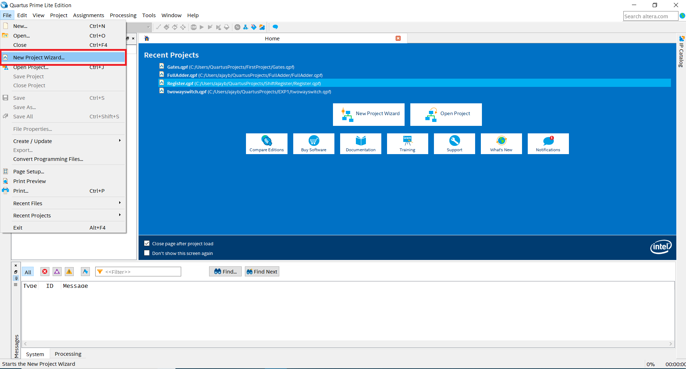
Note : In below image the directory chosen is "C:\Users\QuartusProjects\First_Project", but you must create a different folder named AND_GATE anywhere on your local machine and choose this directory (Do not create this folder in C drive). Also, name the project as AND_GATE as you will submit this project folder as Task 0 submission. Top Level Module will be default i.e. AND_GATE
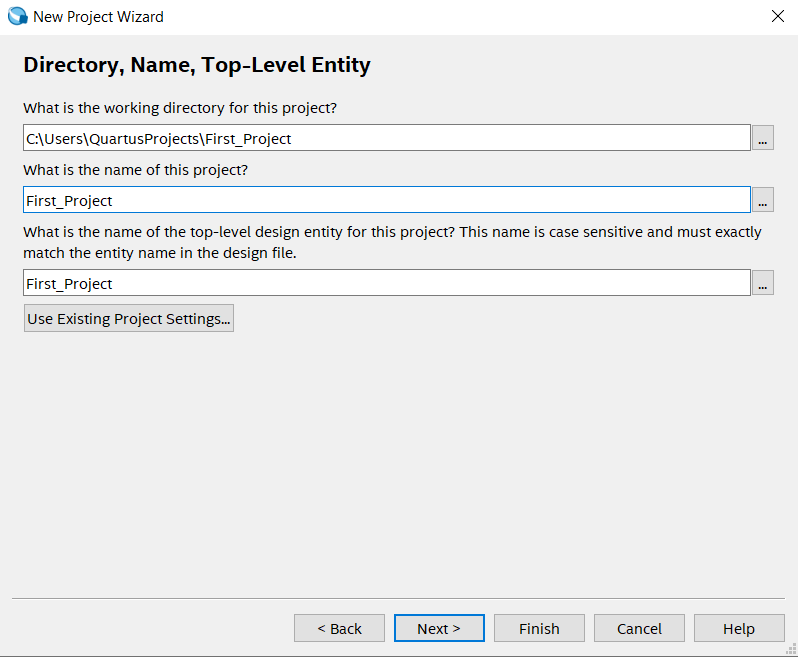
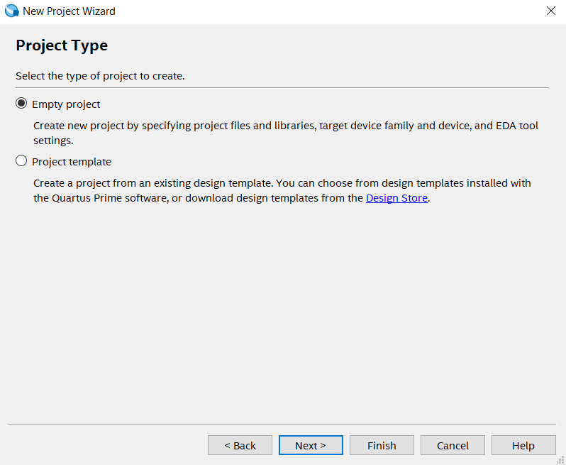
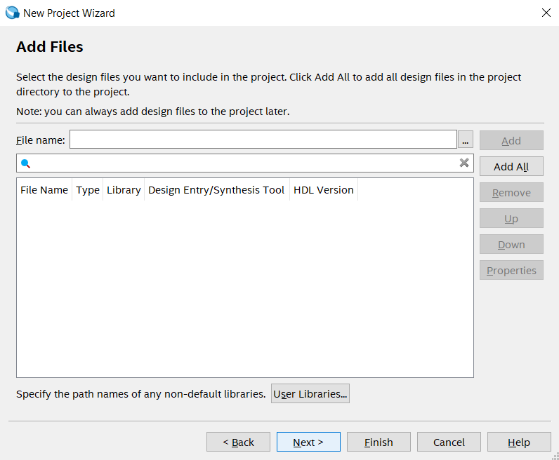
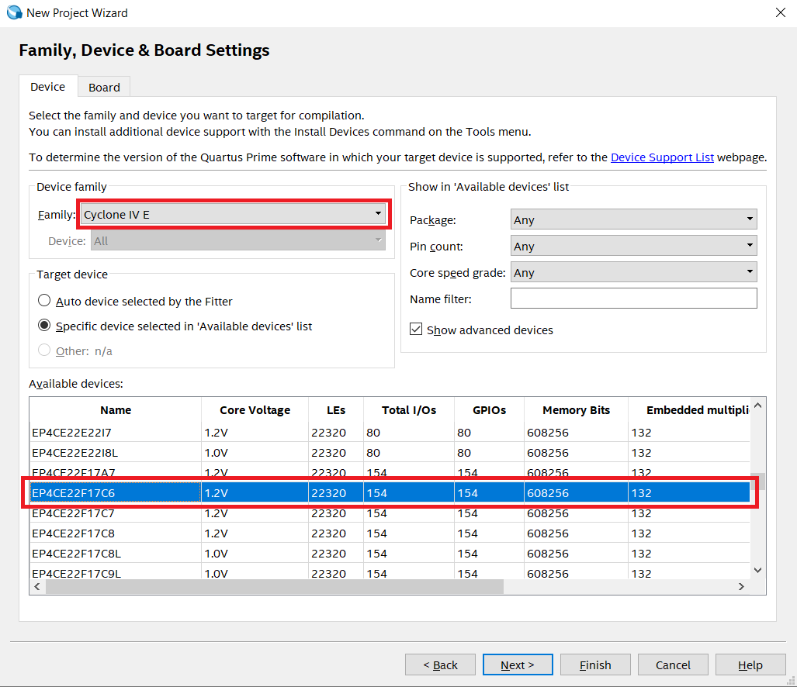
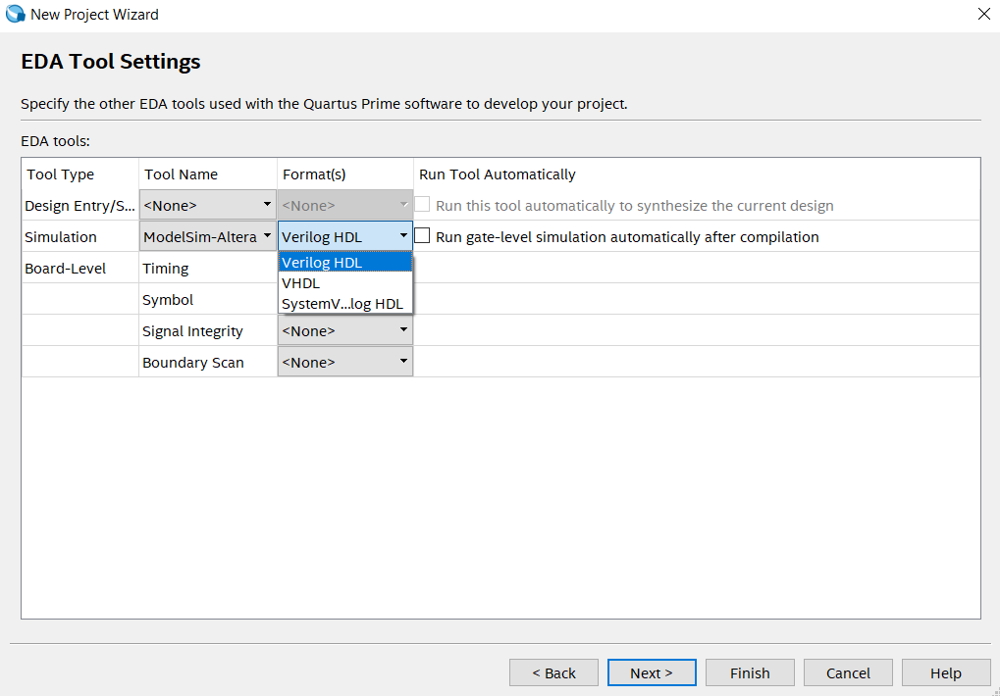
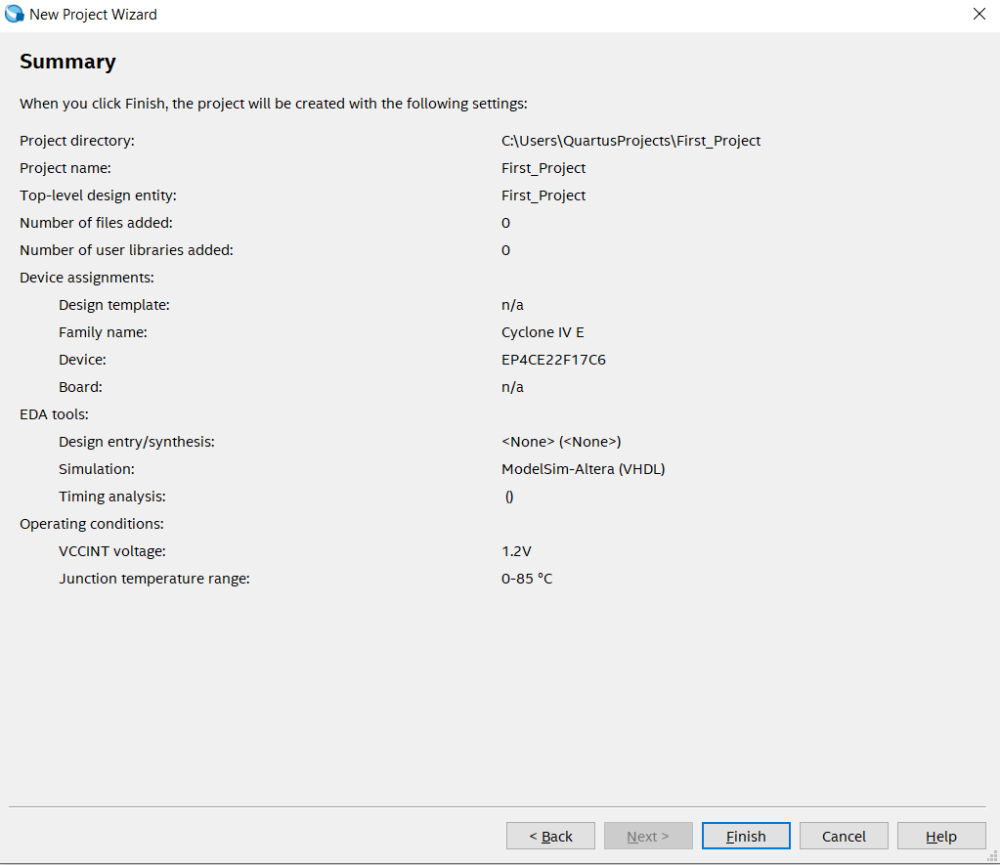
2. Creating new files in the project
In the previous steps, we created a directory and selected device families and simulation tool to set up a Quartus project, which tells the tool about the board we are using. We now need
to add some actual circuitry to this project. We will create a simple design of an AND gate and this design will have two data inputs A
and B and a single output C.
Follow the below steps to add necessary file in our project:
- Click on File → New.
- Select Verilog HDL.
- Write down the below code in the newly created file. Also note that Verilog HDL is case sensitive.
- After completing the code click on File → Save As.
- Enter the name of file (it should be same as module name i.e. AND_GATE), enter correct file extension. For Verilog HDL file extension is .v and then Click on Save.
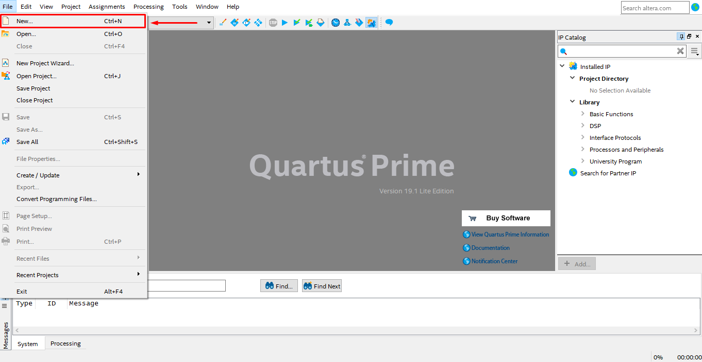
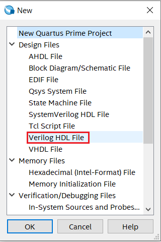
Verilog Code for AND gate
module AND_GATE
(
input A,B, // defining inputs A and B of AND gate
output C // defining output of AND gate
);
assign C = A & B; // Logic implementation
endmodule
3. Compiling the Project Files
- To compile the file, the file must be the top-level enity of the project. We can assign the AND_GATE.v file as top-level entity by Project → Set as Top-Level Entity option in toolbar.
- Generate synthesis or final compilation results by running the following commands: Click Start Compilation shown in the figure below (red box) to generate final compilation results.
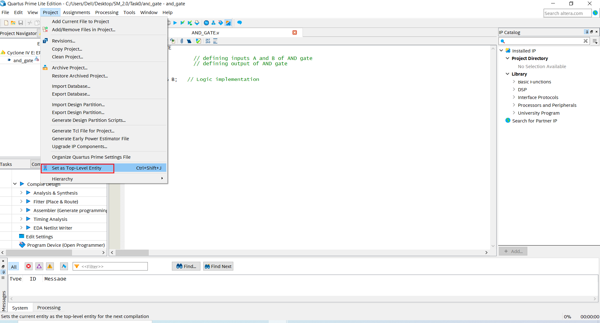
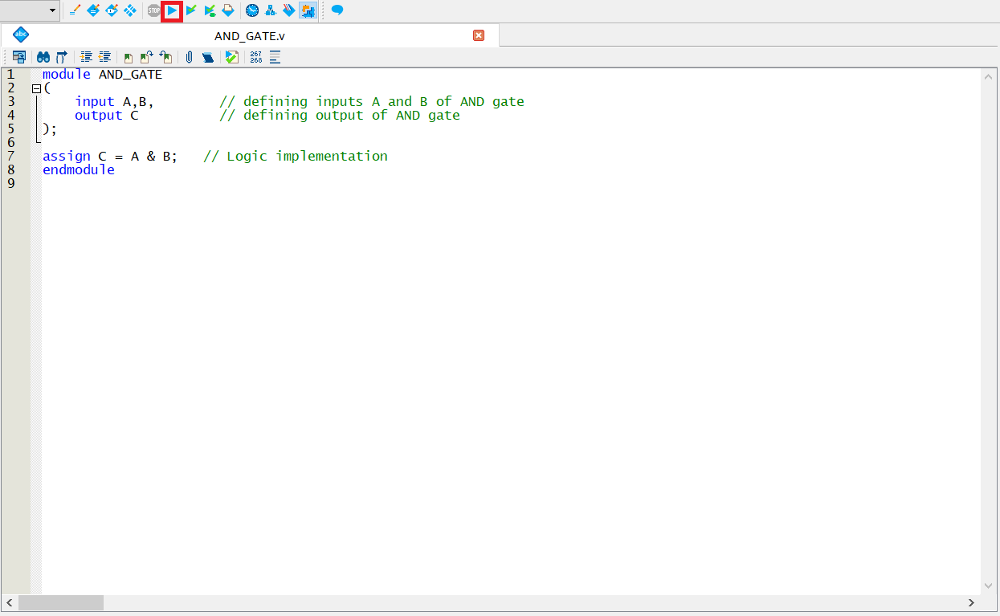